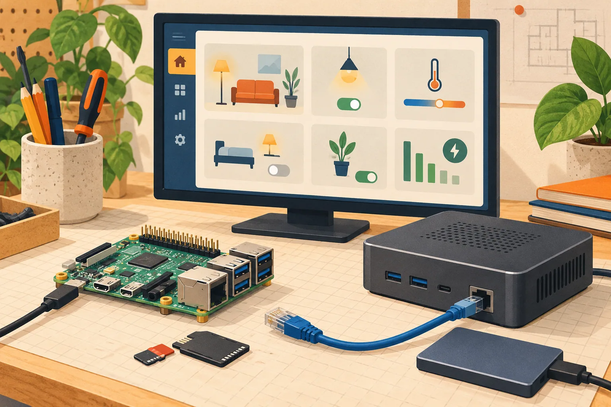

← 返回全部路线根据 Home Assistant OS 用途制作的示意插图，不是实机照片。 查看图片来源 ↗
Home Assistant OS
- 把旧小主机或瘦客户机改为家庭自动化服务器。
- 3/5 个维度有可核验来源
- 使用已读来源支持的难度、文档/社区与实用价值维度；未核价的成本及未完整评估的刷坏/安全风险保留为 null。

它能变成什么
- 智能家居
- 设备范围 官方安装文档支持的 Generic x86-64 / 单板机
- 设备类别 电脑与瘦客户机
- AI 关系 传统复活基础设施
- 路线类型 具体改造路线
- 资料最近核对 2026-10-20
动手前
- 改造方法 替换系统
- 上手难度 进阶
- 拆机 不需要
- 焊接 不需要
- 云 API / 服务 依可选集成
- 停止条件 要满足架构、启动方式及存储条件；安装映像会覆盖目标磁盘。
- 固件 待核实
- 地区版本 待核实
- 二手价范围 缺少可靠来源
- 改造成本 缺少可靠来源
- 可能成本 启动 U 盘
- 可能成本 健康的系统盘
- 可能成本 可选 Zigbee/Thread USB 适配器
开始前的三点
风险与恢复
- 数据丢失风险 预计会发生
- 刷坏 / 无法启动风险 依操作路径
- 恢复路线 映像写入会覆盖目标磁盘；先保存全盘镜像，后续用原系统安装介质恢复。
- 恢复资料 ↗（无已核验链接）
实际选择依据
- 原来卡在哪里 闲置小型 x86 电脑可以继续运行，却缺少一个明确、低维护的家庭用途。
- 改完能做什么 安装 Home Assistant OS，作为家庭自动化主机，按需连接语音或其他扩展。
- 判断依据 官方 Generic x86-64 路径要求 UEFI，需关闭 Secure Boot；目标存储写入会覆盖数据。文档区分 512n/512e 与不支持的 4Kn，老电脑不能仅凭有 64 位 CPU 就判定兼容。安装 HAOS 本身不等于具备本地大模型推理能力，应另算语音模型、加速器与内存需求。
- 适合你，如果 有可专用的 x86-64 UEFI 小主机，希望集中管理已有设备的人。
- 先别选，如果 需要保留原磁盘系统、只支持传统 BIOS，或期待低配机器自动获得强 AI 算力的人。
完成后检查
- 检查 UEFI、存储扇区和网络条件
- 备份磁盘，安装后确认重启能持续启动
- 连接一个真实设备并完成备份导出和恢复演练
证据、维护与来源
- E1 · 源码与部署文档 官方 Generic x86-64 文档给出 UEFI、关闭 Secure Boot、512 字节逻辑扇区要求与实际安装步骤。
- 实机状态 KitAgain 未对此设备进行实机测试。
- 维护状态 仓库未归档
- GitHub 最后 push 2026-10-19T13:52:06Z
- 仓库许可证 Apache-2.0
- 近期 push 不证明型号可用；根许可证也不自动覆盖固件、模型、品牌或第三方组件。
- 上游项目文档 ↗2026-10-20先用它了解项目能做什么、怎样开始，以及作者写明的限制。https://github.com/home-assistant/operating-system/blob/dev/README.md
- 官方适配或安装文档 ↗2026-10-20动手前用它核对准确型号、固件版本和安装步骤。https://www.home-assistant.io/installation/generic-x86-64/
项目账号与已核实作者主页
- home-assistant · GitHub ↗ — 源码仓库所有者账号；不据此推断其为唯一作者